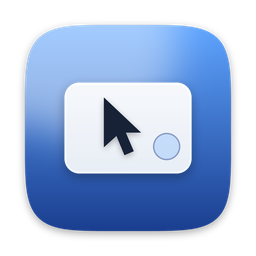

TrackpadRemote
iPhone · iOS 17 이상
트랙패드가 되는 쪽. 터치를 읽어 Mac으로 보냅니다.
- 클릭, 스크롤, 핀치 확대, 세·네 손가락 제스처
- IP 입력 없이 근처 Mac을 자동으로 찾음
책상 위에 iPhone을 내려놓고 쓸어 보세요. 커서가 손끝을 따라옵니다.
앱이 두 개 필요합니다 — iPhone 앱 + Mac 앱iPhone · iOS 17 이상
트랙패드가 되는 쪽. 터치를 읽어 Mac으로 보냅니다.

Mac · macOS 14 이상
커서를 움직이는 쪽. 메뉴 막대에서 iPhone을 기다립니다.
잘 안 되면 지원 페이지를 보세요.